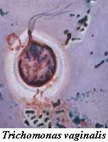
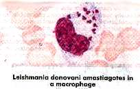
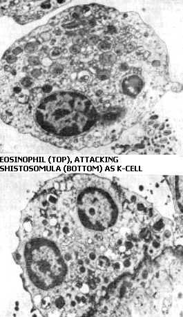

IMMUNITY AGAINST PARASITES
Microparasites (Protozoa) and macroparasites (Helminthes), according some estimates, involve 20% to 30% of mankind. Only one parasitic disease – malaria – contaminates almost 2 millions of persons annually, still staying second most highly spread infection after grippe. It is not surprising, that the struggle against these worst enemies of mankind was awarded with Nobel Prizes twice (R. Ross in 1902 and Ch. Laveran in 1907).
Immune response against Protozoa is based, mostly, on cellular effectors. They hit the intracellular parasites, for example Leushmania.
Antibody dependent cellular cytotoxicity and opsonin-dependent phagocytosis batter extracellular forms of parasites (e.g. Amoebae), chiefly.
Ig may block intracellular penetration of Protozoa, by means of appropriate receptor occupation. They also mediate complement-dependent lysis of Protozoan cells. All these forms of immune defense are contributed by T-cells. CD4+ lymphocytes are essential for protection against blood forms of malaria Plasmodium, CD8+ cells are principal for attack of hepatic forms. It is accepted that intracellular forms of parasites are attacked with participation of TH1-lymphocytes.
All kinds of antiprotosoal immunity are amplified by cytokines (especially, by IL-2, IL-3, TNFa ). The most energetic stimulant of immunity against Protozoa is IFNg .

The parasites are eukaryotic, and their proteins resemble human ones in many sequences. In course of parallel host-parasite evolution, obeying to the “shield and sword” principle, parasites acquired great degree of antigenic mimicry with host cells, as well as long inventory of mechanisms to bypass the immune surveillance.
Moreover, the immune resistance against one stage of parasite life cycle (larvae) may be less or non-effective towards next stages (adult forms). Partially, these difficulties explain, why, in spite of many attempts, we still have no anti-malaria vaccine, efficient enough. In fact, single effective anti-protozoal vaccine, available up to date, is one successfully used by N.I. Latyshev against skin leushmaniosis.
The role of phagocytosis in Protozoal diseases is ambiguous. Macrophagal immune-dependent phagocytosis, if it is completed, can serve as very important factor of recovery. Due to this, in all Protozoal invasions there are blood monocytosis and hepatosplenomegaly.

But there is another side to this medal: many a Protozoan (Leushmaniae, Toxoplasmae, and Listeriae) are able to survive within phagocytes, because they inhibit of bypass the final lytic stage of process. This causes persistent infection and granuloma formation. The cytokines help to amplify macrophages and finish phagocytosis. But their excess leads to prolonged fever and acute phase response and may cause cachexia. Many Protozoa are able to refute the allegations of our immune system by means of special anti-weapons. Trypanosomes possess the blocker of complement, Leushmania donovani has repellents of complement factors, preventing their attachment. Different other Leushmaniae display antioxidants, inhibitors of MHC-expression, blockers of proteases and respiratory phagocytic burst. Dysenteric amoebae may protect themselves from immune attack by sequestration within cysts. Plasmodium of malaria sends soluble inactivating S-antigen to stop circulating Ig before contact with its body. This explains the great intensity of immune complex reactions in malaria, with all complications brought by them. Parasites vary the structure of their antigens, imitate host epitopes or get the “envelope” consisting of adsorbed human proteins in order to avoid the immune attack. Sometimes this may deceit the immune system and triggers the autoallergy. The example is Chagas’ disease. In this illness the antigen of Trypanosoma cruzi, resembling that of human neural ganglions boosts patient autoimmunity. Deceived immune system produces autoantibodies against self-cells, they cause b - adrenergic action over smooth myocytes, and final manifestations are cardiomyopathy, megacolon and megaloesophagus (L. Sterin-Broda et al., 1982).A lot of parasites can activate immune suppression mechanisms, which establish mutual tolerance of host and parasite. Due to this, secondary immune deficiency and opportunistic infections often accompany parasitic invasion (for instance, kala-azar).
Macroparasites or parasitic worms elicit the immunity with predominant
activation of TH2-lymphocytes. They produce IL-4, IL-5 and IL-13,
involving into defensive reaction basophils, eosinophils and mast cells, as well as
platelets (“Anaphylaxis”). Anaphylaxis is not single way of anti-helminthes
immunity, but play pivotal role in anti-worm resistance. IgE are main triggers of
anti-helminthes immunity in all individuals (not only in allergic persons). The incidence
of helminthiases is many times greater among pre-mammal animals, not able to produce this
class of antibodies. The research among Papuas, suffering from ankylostoma infestation and
strongiloidosis, has revealed that individuals with highest predisposition to anaphylaxis
were less infested by helminthes (D.Grove, A. Phorbes, 1975). Vice versa, in presence of
some helminthes (for example, in children with enterobiosis) the threshold of anaphylaxis
is easier to trespass by other non-helminthes antigens (concept of non-specific “allergic
breakthrough”).  The eosinophils are crucial effectors of this
immunity.
The eosinophils are crucial effectors of this
immunity.
All mechanisms of antigenic mimicry, immune surveillance bypasses and induced immunosuppression, described above for Protozoal parasites, is actual also for Helminthes. Worms and their larvae also perform antigenic variance, sequestration, enveloping into shirt of host antigens etc. That’s why, worm infestations is risky not only for anaphylaxis, but also for secondary immune deficiencies.
Shistosomiasis is especially known to suppress cellular immunity, including anti-tumor one. Its hepatic form (opistorchosis), highly spread in Northern Asia, increases the risk of liver cancer.
Completing the brief review of infectious immunology, we shall stress that the expenditure of anti-infectious defense sometimes is very high if one takes into account the provocation of secondary autoallergy, anaphylaxis, immune complex diseases and immune deficiency. But all this negative sequels occur, mostly, in individuals with some minor genetically determined specifics of immune regulation. The details of this are discussed in the section “Basic Allergology”.